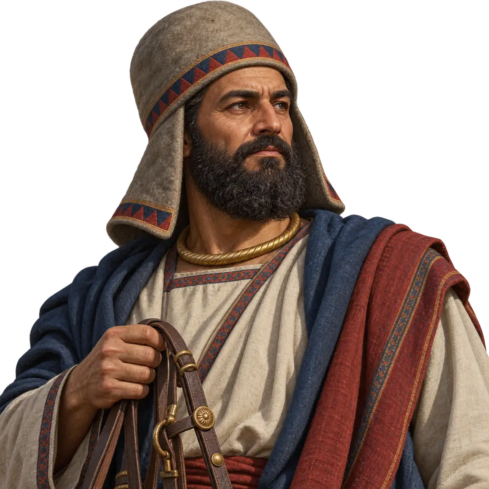
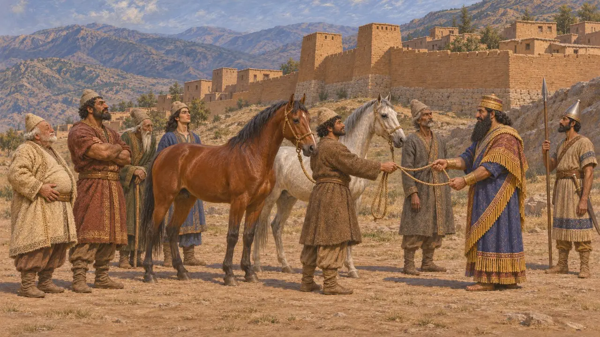
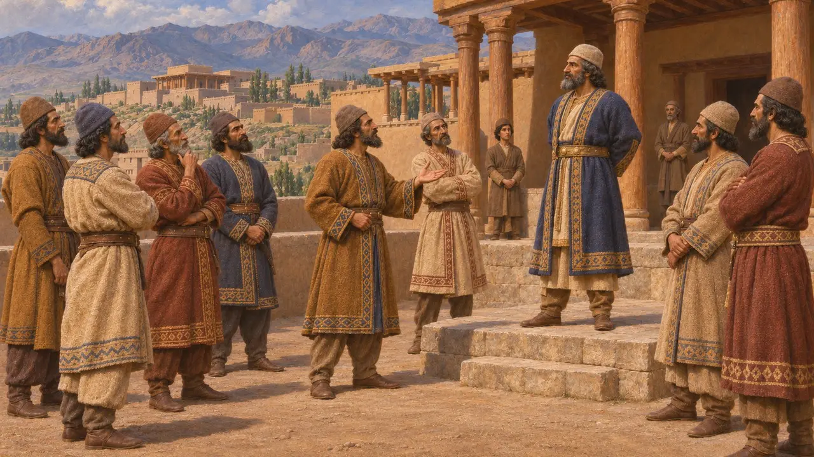
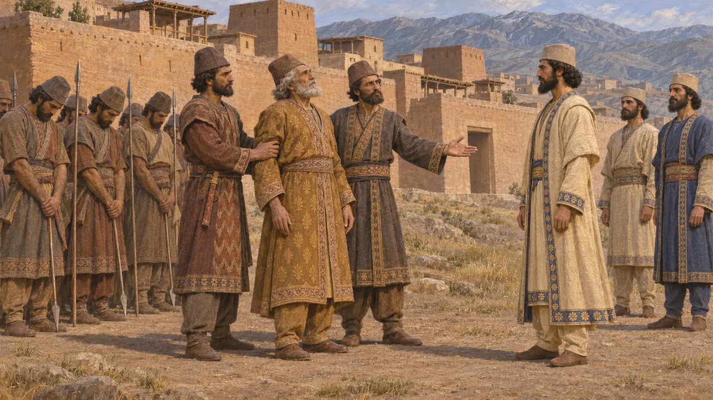
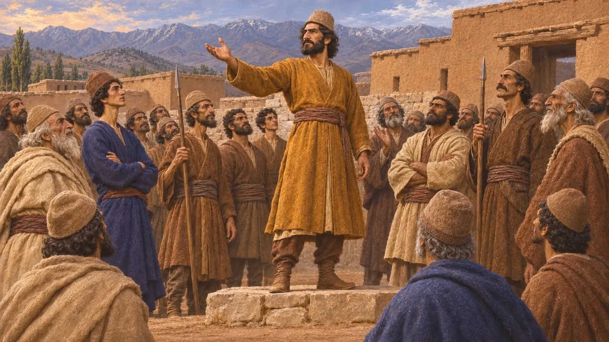
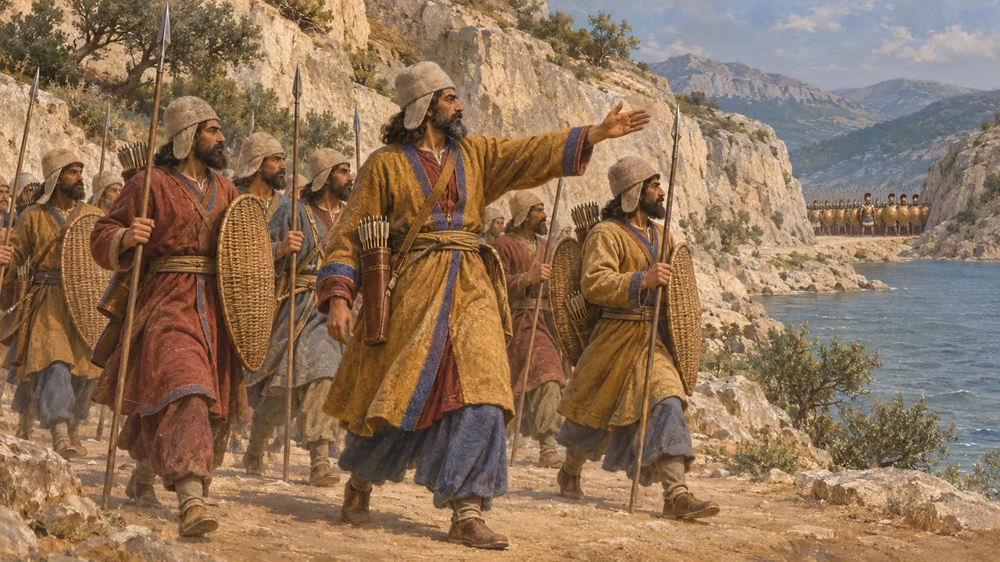
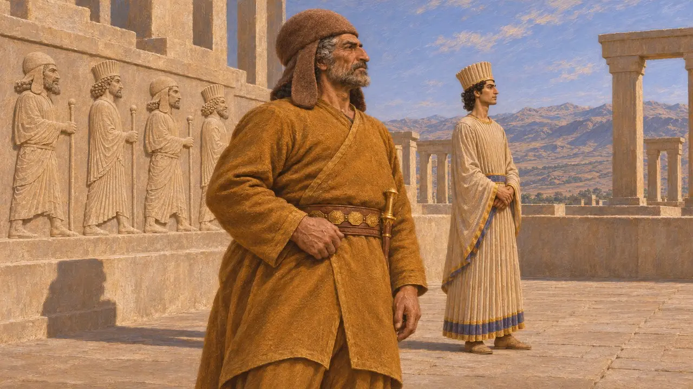

メディア人はザグロス山脈中部に住むイラン系言語の民で、エクバタナを主都とした。その王は紀元前612年にアッシリアを滅ぼす一翼を担い、ヘロドトスによれば、紀元前550年頃にキュロスがアステュアゲスを倒すまで、メディアの王たちがペルシア人を支配していたという。アケメネス朝のもとでも彼らは帝国の最も近しい盟友であり続け、その近さゆえにギリシア人はしばしばペルシア人を「メディア人」と呼んだ。
ゲームでは： 本作ではメディア人を、羊毛と木材を商う牧畜民、徴集兵、そしてバガスターナにおけるフラヴァルティシュの反徒として描いている。交易の描写は簡略化されている。メディアは馬の産地として名高く、反乱の中心はベヒストゥンそのものではなくエクバタナであった。

アッシリアとバビロニアの記録に見えるメディア人
同時代の記録アッシリアの王碑文は紀元前9世紀以降、マダの地に言及している。そこには城砦化した町々を治める多くの首長が分立していたと記され、アッシリア王たちは彼らから貢納として馬を取り立てたことを誇った。バビロニアの年代記によれば、ギリシア人がキュアクサレスと呼んだ王ウマキシュタルは紀元前614年にアッシュルを攻略し、紀元前612年にはバビロンのナボポラッサルと共にニネヴェを陥落させた。
Assyrian royal annals; Babylonian Chronicles, Fall of Nineveh Chronicle

メディアは王国か、首長たちの連合か
係争中ヘロドトスはメディア人の王としてデイオケス、フラオルテス、キュアクサレス、アステュアゲスの4人を挙げ、彼らがエクバタナを築いて上アジアを支配したと述べる。一部の歴史家はH・サンシシ＝ヴェールデンブルフに倣い、メディアの王碑文も文書庫も見つかっていないことから、永続的なメディア国家が実在したことを疑っている。一方で、エクバタナを中心とする強大ながらも緩やかに統合された王国の存在を認め、その慣習を後にペルシア人が取り入れたとする見方もある。
Herodotus 1.95-130; H. Sancisi-Weerdenburg, Achaemenid History III, 1988

アステュアゲスの没落
同時代の記録ナボニドゥス年代記によれば、イシュトゥメグ(アステュアゲス)はキュロスに向けて進軍したが、自軍が反乱を起こして彼をキュロスに引き渡した。キュロスはその後エクバタナを攻略し、その財宝をアンシャンへ運び去った。この記事は紀元前550年頃のものである。シッパル出土のナボニドゥスの円筒碑文も、キュロスがメディア人を蹴散らしアステュアゲスを捕らえたことに触れている。ヘロドトスは貴族ハルパゴスが裏切りを仕組んだと述べ、一方、後代の抜粋によってのみ知られるクテシアスは、より長い戦争を描いている。
Nabonidus Chronicle; Sippar Cylinder of Nabonidus; Herodotus 1.123-130

フラヴァルティシュと紀元前522-521年の反乱
同時代の記録ダレイオスのベヒストゥン碑文によれば、フラヴァルティシュというメディア人がキュアクサレスの一族のクシャスリタであると名乗り、メディアの民は彼に寝返った。ダレイオスの将軍たちがその支持者と戦い、ダレイオス自身もクンドゥルで彼を破った。フラヴァルティシュはラガへ逃れたが捕らえられ、身体を損なわれたうえでエクバタナにて串刺しにされた。
DB §24-32

ペルシア帝国の協力者
古代の記述ヘロドトスによれば、クセルクセスの軍のメディア人はペルシア人と同じ装備をしており、その装束は実はメディアのものであったという。またテルモピュライでは、まずメディア人がスパルタ人に差し向けられた。メディア人は高位の指揮官も務めた。ハルパゴスはキュロスのためにイオニアを平定し、ダティスは紀元前490年の遠征軍を率いた。ギリシア人はペルシアに与することを「メディアに付く(メディスモス)」と呼んだ。
Herodotus 7.62, 7.210, 1.162, 6.94

名前の横の紋章
同時代の記録メディア人に旗があったかどうかは知られていない。本作では、側面に垂れ布のついたメディアのフェルト帽で彼らを表している。これはペルセポリスの浮彫で、メディア人とペルシア人を見分ける装束である。浮彫では、アパダナの階段にメディア人とペルシア人が交互に並んでいる。
Persepolis, Apadana reliefs; E. Schmidt, Persepolis I, 1953
出典
- Herodotus, Histories 1.95-130
- Darius I, Behistun inscription (DB)
- Nabonidus Chronicle
- H. Sancisi-Weerdenburg, Was there ever a Median empire?, Achaemenid History III, 1988
- G. Lanfranchi, M. Roaf and R. Rollinger (eds.), Continuity of Empire (?): Assyria, Media, Persia, 2003
- P. Briant, From Cyrus to Alexander, 2002